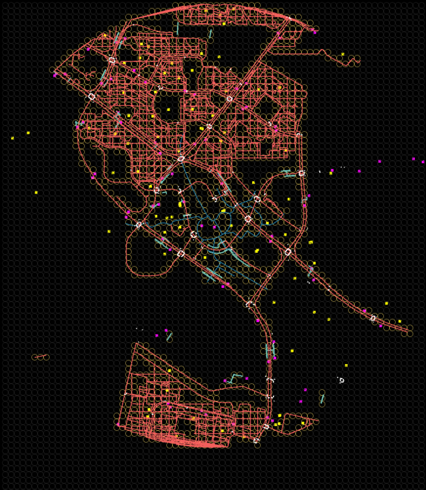
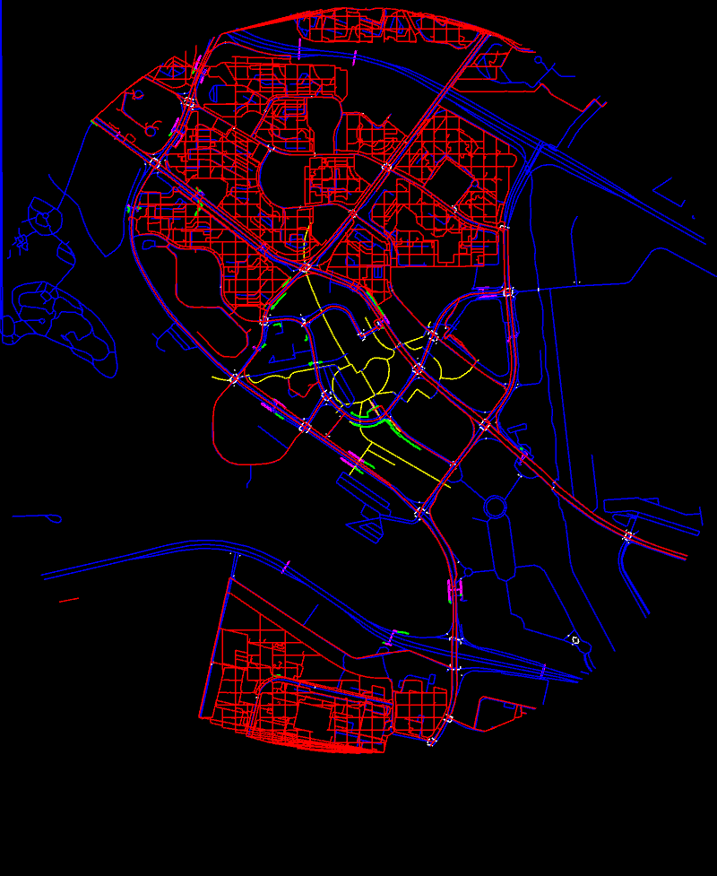
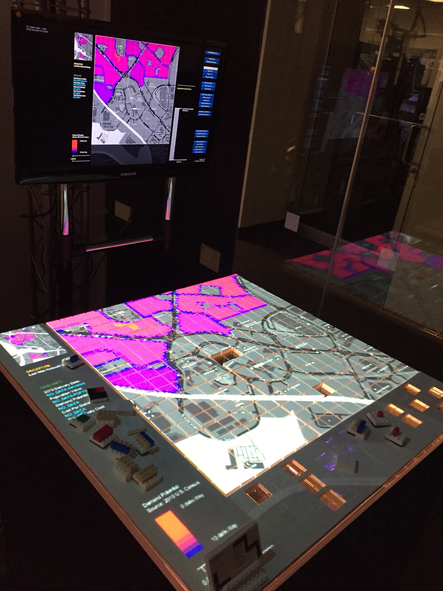
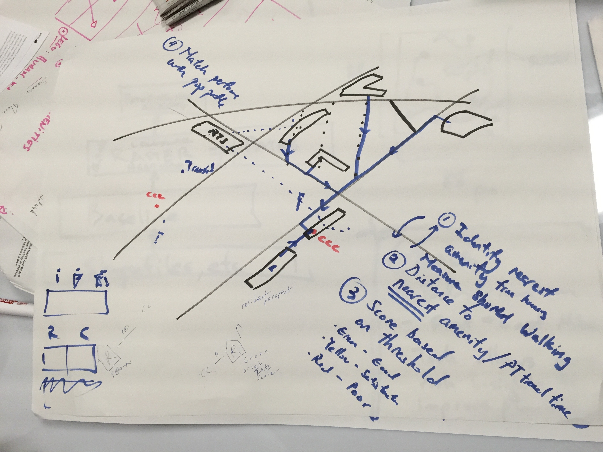
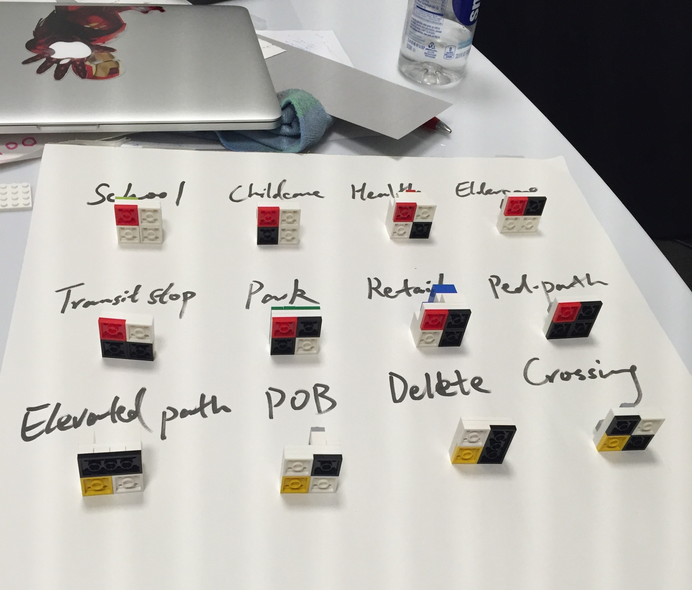

Project on pedestrian accessibility done in collaboration with Singapore Centre for Liveable Cities and MIT Media Lab City Science Group. I co-lead an ideation session with Singaporean planners, where we designed the scope of the project. Worked with planners to design the piece topologies and user interface for the final deployment. My main contribution was implementing the Bresenham computer graphics algorithm to parse GIS data to computational structures for use in a pedestrian urban model.
    